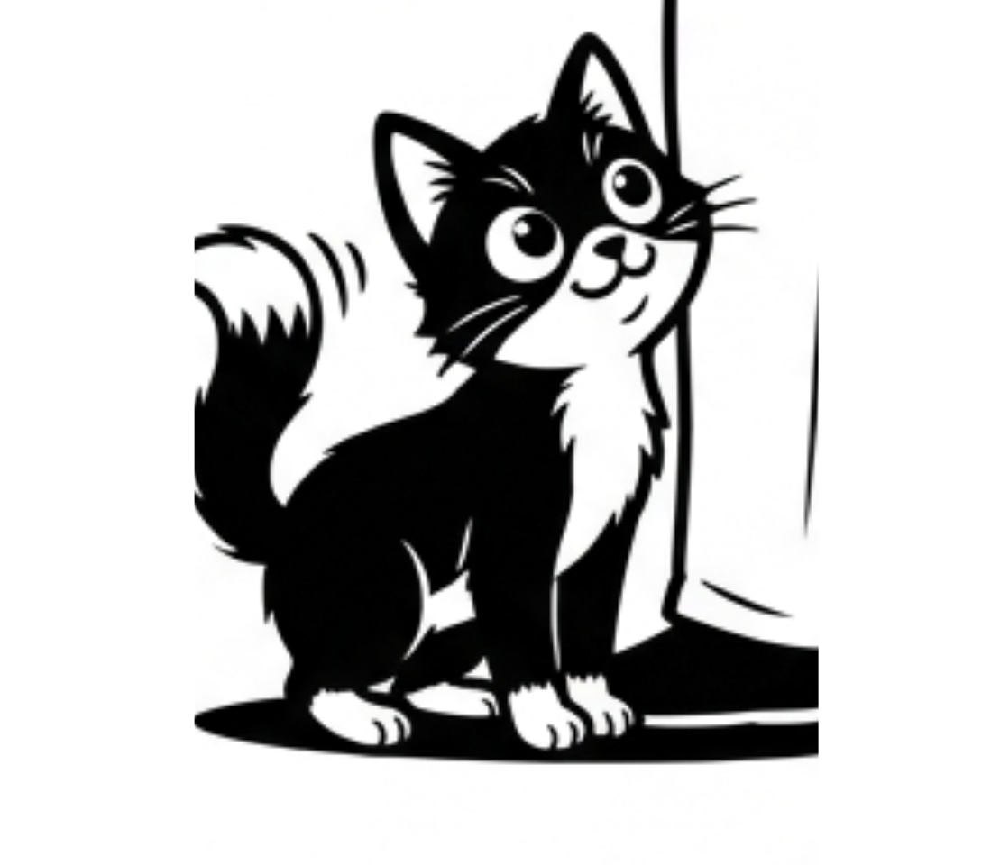

猫がスリスリしてくる理由｜愛情？マーキング？科学でわかる本当の意味
帰宅した瞬間、足元にスリ...スリ...。かわいい愛情表現に見える猫のスリスリには、フェロモンによるマーキング、においの上書き保存、信頼のサインが重なっています。

ある日の夕方、帰宅した私を出迎えたのはドアの前で仁王立ちしているうちの猫、もふお。玄関を開けた瞬間、激しい体当たり級スリスリタイムが始まる。「おかえり！」という愛情かと思いきや、実は深い科学的理由があったのです。
この記事でわかること
| テーマ | 内容 |
|---|---|
| マーキング | スリスリが「縄張り宣言」である科学的理由 |
| 甘え行動 | フェイシャルバンティングとは何か |
| フェロモン | においの「上書き保存」メカニズム |
| 要注意サイン | 異常なスリスリが示すストレスや皮膚トラブルのサイン |
| 他の動物との比較 | ブタのナージングとの共通点 |
1. スリスリは縄張りの主張だった
猫の顔にはフェロモンを出す「におい腺」があります。頬やあごを人や家具にこすりつけることで、「これは自分の安心できる相手・場所」というしるしを残しているのです。
スリスリのメカニズム
風呂上がりや外出後にスリスリが激しいのは、猫のにおいがリセットされているから。香水やシャンプーの香りがついた場所を集中的にこするのも、においの上書き保存モードです。
2. 甘えたいだけのこともある「フェイシャルバンティング」
顔を直接押しつけてくるフェイシャルバンティングは、信頼している相手にだけ見せる愛情表現のひとつです。ゴロゴロ音やゆっくりした瞬きが一緒なら、安心して甘えている可能性が高いでしょう。
3. フェロモンとにおい腺の仕組み
4. 甘え vs マーキング 比較表
| 状況 | スリスリの種類 | 意味 |
|---|---|---|
| 帰宅直後 | 体全体・激しい | においのリセット後のマーキング |
| 風呂上がり | 集中的・執拗 | 石けんの香りを上書き保存 |
| ゴロゴロしながら | 顔・頭をそっと押しつける | フェイシャルバンティング。愛情表現 |
| 知らない人へ | 足元をサッとこする | 情報収集と様子見 |
| 家具や壁に | 頬・あごをこすりつける | 縄張りへのマーキング |
5. 実は豚も同じ。ナージングとの共通点
猫のスリスリ
- フェロモンでマーキングする
- 信頼する相手に愛情を示す
- においを上書き保存する
豚のナージング
- 鼻とヒゲで情報収集する
- 体温やにおいの変化を読む
- 社会的コミュニケーションに使う
種は違っても、体をこすりつける行動は「安心」「所属」「情報交換」と深く結びついています。
6. 異常なスリスリが示すサイン
気になるサインが続く場合は、皮膚や耳、口まわりのトラブルが隠れていることもあります。いつもと違う強さや頻度なら、獣医師への相談をおすすめします。
よくある質問
猫が帰宅直後に激しくスリスリするのはなぜ？
外出中に猫にとっての「自分のにおい」が薄れるためです。帰宅した飼い主にマーキングし直し、安心できるにおいへ戻そうとしています。
スリスリされるのは愛されている証拠ですか？
多くの場合は信頼のサインです。特に顔や頭を押しつけてくる行動は、親しい相手に見せるフェイシャルバンティングと考えられます。
風呂上がりに特にスリスリがひどいのはなぜ？
お風呂で体のにおいが洗い流され、シャンプーや石けんの香りに変わるためです。猫は自分のにおいで上書きしようとします。
家具や壁にスリスリするのも同じ意味ですか？
はい。家具や壁の角に頬やあごをこすりつけるのは、自分の縄張りや安心できる場所としてにおいを残す行動です。
関連記事
まとめ
- スリスリはフェロモンによるマーキングで、「これは自分の安心できる相手」というしるしです。
- 顔や頭を押しつけるフェイシャルバンティングは、信頼する相手への愛情表現です。
- 風呂上がりや帰宅後のスリスリは、においの上書き保存モードです。
- 同じ場所を激しくこする場合は、ストレスや皮膚トラブルの可能性もあります。
- 豚のナージングと同じく、体をこすりつける行動は情報交換の一種です。
次に猫がスリスリしてきたら、「甘えかな？マーキングかな？」と少しだけ観察してみてください。その小さな行動に、猫の安心と進化のしくみが詰まっています。
参考文献
- Bunting (animal behavior) — Wikipedia
- How Do Cats Communicate Their Affection? — Science ABC
- Cats Rubbing Behavior: Why Do Cats Rub Against You? — Basepaws